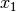
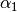
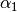

(20) Custom plot symbols¶
One is often required to make special maps that shows the distribution of certain features but one would prefer to use a custom symbol instead of the built-in circles, squares, triangles, etc. in the GMT plotting programs psxy and psxyz. Here we demonstrate one approach that allows for a fair bit of flexibility in designing ones own symbols. The following recipe is used when designing a new symbol.
- Use psbasemap (or engineering paper!) to set up an empty grid that goes from -0.5 to +0.5 in both x and y. Use ruler and compass to draw your new symbol using straight lines, arcs of circles, and stand-alone geometrical objects (see psxy man page for a full description of symbol design). In this Section we will create two new symbols: a volcano and a bulls eye.
After designing the symbol we will encode it using a simple set of rules. In our case we describe our volcano and bulls eye using these three freeform polygon generators:
 r C [ -Gfill ] [
-Wpen ] Draw M [ -Gfill ]
[ -Wpen ] Start new element at ,
r C [ -Gfill ] [
-Wpen ] Draw M [ -Gfill ]
[ -Wpen ] Start new element at , 
 D Draw straight line from current point
to , around (, ) r 
A Draw arc segment of radius r from angle
to
D Draw straight line from current point
to , around (, ) r 
A Draw arc segment of radius r from angle
to We also add a few stand-alone circles (for other symbols, see psxy man page):
r C [ -Gfill ] [
-Wpen ] Draw r c [
-Gfill ] [ -Wpen ] Draw single circle of radius
r around , The optional -G and -W can be used to hardwire the color fill and pen for segments (use - to disallow fill or line for any specific feature). By default the segments are painted based on the values of the command line settings.
Manually applying these rules to our volcano symbol results in a definition file volcano.def:
Without much further discussion we also make a definition file bullseye.def for a multi-colored bulls eye symbol. Note that the symbol can be created beyond the -0.5 to +0.5 range, as shown by the red lines. There is no limit in GMT to the size of the symbols. The center, however, will always be at (0,0). This is the point to which the coordinates in psxy refers.
The values refer to positions and dimensions illustrated in the Figure above.
Given proper definition files we may now use them with psxy or psxyz.
We are now ready to give it a try. Based on the hotspot locations in the file hotspots.d (with a 3rd column giving the desired symbol sizes in inches) we lay down a world map and overlay red volcano symbols using our custom-built volcano symbol and psxy. We do something similar with the bulls eye symbols. Without the -G option, however, they get the colors defined in bullseye.def.
Here is our final map script that produces the Figure:
#!/bin/bash
# GMT EXAMPLE 20
#
# Purpose: Extend GMT to plot custom symbols
# GMT progs: pscoast, psxy
# Unix progs: rm
#
# Plot a world-map with volcano symbols of different sizes
# on top given locations and sizes in hotspots.d
ps=example_20.ps
cat > hotspots.d << END
55.5 -21.0 0.25
63.0 -49.0 0.25
-12.0 -37.0 0.25
-28.5 29.34 0.25
48.4 -53.4 0.25
155.5 -40.4 0.25
-155.5 19.6 0.5
-138.1 -50.9 0.25
-153.5 -21.0 0.25
-116.7 -26.3 0.25
-16.5 64.4 0.25
END
gmt pscoast -Rg -JR9i -Bx60 -By30 -B+t"Hotspot Islands and Cities" -Gdarkgreen -Slightblue \
-Dc -A5000 -K > $ps
gmt psxy -R -J hotspots.d -Skvolcano -O -K -Wthinnest -Gred >> $ps
# Overlay a few bullseyes at NY, Cairo, and Perth
cat > cities.d << END
286 40.45 0.8
31.15 30.03 0.8
115.49 -31.58 0.8
END
gmt psxy -R -J cities.d -Skbullseye -O >> $ps
rm -f hotspots.d cities.d
Using custom symbols in GMT.
Given these guidelines you can easily make your own symbols. Symbols with more than one color can be obtained by making several symbol components. E.g., to have yellow smoke coming out of red volcanoes we would make two symbols: one with just the cone and caldera and the other with the bubbles. These would be plotted consecutively using the desired colors. Alternatively, like in bullseye.def, we may specify colors directly for the various segments. Note that the custom symbols (Appendix [app:N]), unlike the built-in symbols in GMT, can be used with the built-in patterns (Appendix [app:E]). Other approaches are also possible, of course.